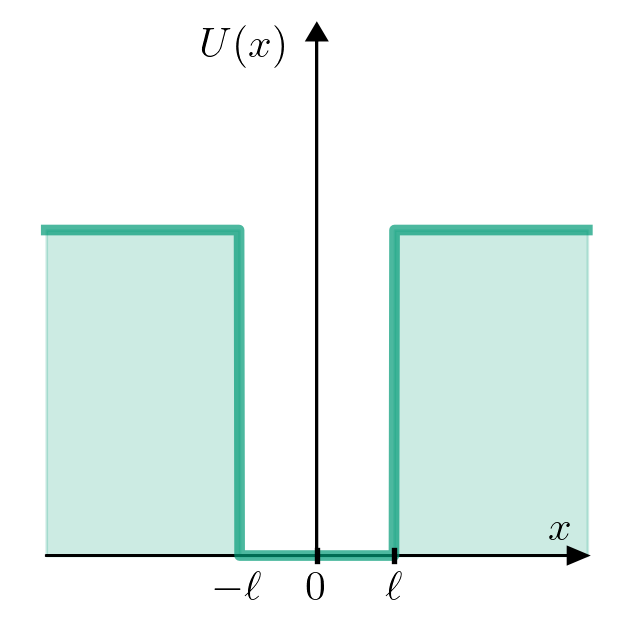

Code
from pylab import *
plt.rcParams.update({
"text.usetex": True,
"font.family": "sans-serif",
"font.sans-serif": "Helvetica",
})
ℓ = 4 # (Å)
x = linspace( -ℓ-10, ℓ+10,1000 )
U = zeros_like(x)
U[x<-ℓ] = 60
U[x> ℓ] = 60
fig,ax = plt.subplots(figsize=(4,4))
ax.plot(x,U,alpha=0.7,lw=4,c="#009B77")
ax.fill_between(x,U,0,alpha=0.2,color="#009B77")
ax.set_axis_off()
ax.set_ylim((-10.0,99))
ax.arrow(-10-ℓ,0,20+2*ℓ,0 ,length_includes_head=True,head_width=3,head_length=1,color='k' )
ax.arrow( 0,0,0,98 ,length_includes_head=True,head_width=1,head_length=3,color='k' )
ax.plot([0,0],[-1,1],lw=2,c='k')
ax.plot([ℓ,ℓ],[-1,1],lw=2,c='k')
ax.text(10+ℓ-2,3,r"$x$",fontsize=16)
ax.text(ℓ,-8,r"$\ell$",fontsize=16,ha="center")
ax.text(-ℓ,-8,r"$-\ell$",fontsize=16,ha="center")
ax.text(0,-8,r"$0$",fontsize=16,ha="center")
ax.text(-6,92,r"$U(x)$",fontsize=16);